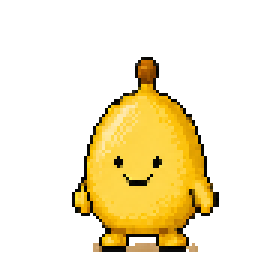
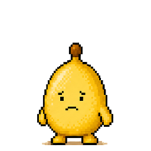
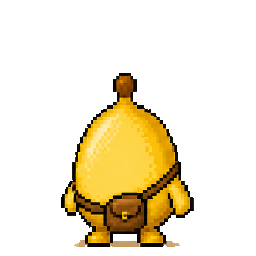
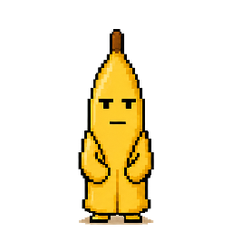
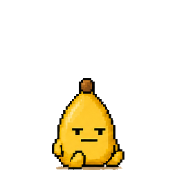
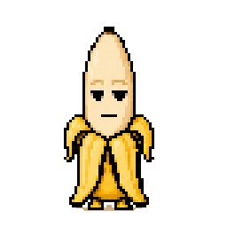
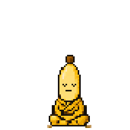
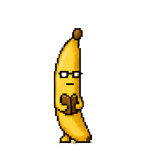

journal, or the banana tells.
a paid journal with a pixel banana in it. write, or photograph the page and skriblio types it up. stop for five days and the banana tells a friend you picked. they have to say yes first.
two weeks free. then $49.99 a year or $9.99 a month, one price everywhere. mac and windows included.

day five. ned left.
the peel stays. so does the door. write once and it comes back.
how it works
- one
write anything
two minutes is enough. or photograph the paper page. the handwriting becomes text you can search, and the photo stays in your vault.
- two
the banana keeps count
seven states, from here to gone, set by the days since your last save. a widget shows it with one line. no streaks, no badges, no red dots.
- three
the circle
pick up to five friends. after five quiet days the banana sends one plain message. then every four days, three at most. it stops the moment you write.
- day 0heregood. day 12.
 day 1waitingno rush.
day 1waitingno rush.
day 2 to 3restlessi am fine. this is fine.
day 4roguei am packing.- day 5gonened left. this is on you.
- first savebacki came back. do not make it a thing.
- writinglistening
pick your banana
ten of them. one is yours. you can change later, unless a friend has just been told.

coathands in the peel dalesquare glasses, blank
dalesquare glasses, blank
sitprefers the floor
huskhalf out already bricka plantain. not cute
bricka plantain. not cute- postcarries the mail bag

moethe monk- nedround. has had enough

shushthe librarian kitlying down. on purpose
kitlying down. on purpose
what the friend gets
gets
- one plain message on whatsapp after five quiet days. the one above, with your names in it.
- at most two more, four days apart. then the banana stays gone and says nothing.
- one line when you are back. sam wrote. i am home. thank you.
- a way out. they reply mute, it stops. you remove them, it stops. you pause the circle, it waits a month.
does not get
- a word of what you wrote. the banana only knows dates.
- a mood, a rating, a title, a photo.
- the app. friends never need it.
- anything at all before they said yes on a page that shows the exact words, and keeps them.
a banana for your desk
a small one, in the corner of your screen. it does nothing most of the day. once or twice, if you have not written, it slides in with one line. click it and the phone opens to a blank page.
yours
- face id lockone switch, in you.
- ios data protectionon the phone, and private storage on the server.
- export any timetext, a pdf, or a zip with every photo as you took it.
- delete any timetwo taps. photos first, then every row that was yours.
- friends get a plain linenever the words.
two weeks free.
no card until you pick a plan. then $49.99 a year or $9.99 a month, one price everywhere. your journal exports in one tap, plan or no plan.
questions
how do i cancel
apple or google handle the subscription, not us. iphone: settings, your name, subscriptions, skriblio. android: play store, your profile, payments and subscriptions. you keep access until the period ends.
can i get my journal out
yes. you, then export my data. one text file, a pdf laid out to print, or a zip with your photos as originals and the care log. with a plan or without one, always.
what happens when i delete
you, then delete my account, then confirm. it is immediate. photos first, then every row that was yours. friends stop being messaged at once. no waiting period, no email to write.
what do my friends see
that you have not written for a few days, and later that you have. never a word of what you wrote, never a mood or a rating. the exact messages are on this page.
what if i stop
the banana leaves on day five and a friend hears once, if you set that up. two more messages at most, four days apart, then quiet. your journal waits. write once and the banana walks back in.
is it a habit app
no. no streaks, no badges, no red dots, no confetti. one banana, one count, one friend who might ask how you are. that is the whole trick, and it is opt in twice.
do my friends need the app
no. they get a plain message on whatsapp and can reply mute. they say yes first on a page that shows the exact words.
what does it cost
two weeks free from your first entry. then $49.99 a year or $9.99 a month, one usd price in every country. the mac and windows banana are in both plans.